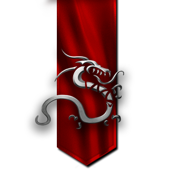
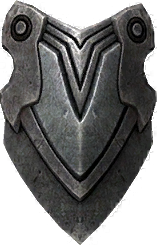

Miasto Forteca
Motto: "Dla Klanu, dla Krwi"



Charakterystyka:
- Społeczeństwo: Krasnoludy
- Przypisane kolory: Jaskrawy czerwony i stalowy
- Bóstwa: Arkath, Smok Ognia. Krasnoludy i Żywioł Ognia są dobrymi przyjaciółmi. Ich uwielbienie dla tego żywiołu jest bardzo osobistym rytuałem, którego inne nacje nigdy nie poznały.
- Filozofia: "Nigdy nie ustępować i nigdy nie tracić twarzy. Być dumnym z tego kim się jest. Za wszelką cenę bronić swej ojczyzny i honoru. Zawsze bronić serca."
- Królestwo: Rimheim, Królestwo Pod Górą.
- Stolica: Tor Myrdal, Twierdza Huczącego ognia.
- Symbole: Smok, Tarcza.
Opis:
Łącząc niegdyś rozproszone klany, Krasnoludy ukształtowały jeden potężny naród, zdolny obronić się przed każdym wrogiem. Owe dzieci Smoka Ognia oddają cześć swemu bóstwu w głębokich czeluściach ziemi, gdzie jedynym źródłem światła jest lawa, a w zamian Arkath zdradza im tajniki kowalstwa i hutnictwa.
Krasnoludy lubują się w długich sagach, eddach oraz opowieściach o swych czynach, wojnach i przygodach, ale nie dzielą się nimi ze światem zewnętrznym. Odkrycia dokonywane w krasnoludzkim królestwie oraz toczone tam bitwy pozostają tajemnicą dla ludów żyjących na powierzchni.
O ich historii wiadomo tyle, że w Epoce Starożytnej Krasnoludy należały do Cesarstwa Shantiri, gdzie nie miały sobie równych w wykuwaniu i zaklinaniu legendarnego uzbrojenia oraz tworzeniu Konstruktów. Podczas Wojen Ognia krasnoludzkie komanda łączyły się z innymi narodami Ashanu, by wspólnie z nimi stawiać czoła Demonom. Ale gdy walki dobiegły końca, Krasnoludy wróciły do swych domów w czeluściach gór i przez kolejne stulecia rzadko miewały do czynienia z innymi rasami.
Historia
0 RRS Asha, Smok Ładu tworzy świat nadając mu kształt i cel. Daje początek Smokom Żywiołów, które tworzy po to, by strzegły i wypełniały jej wolę. Śmiertelne rasy mają być sługami Smoczych Bogów na ziemi. Każda rasa wybrała patrona i podarunek. Wojownicza i porywcza rasa krasnoludów wybrała smoka ognia Arkatha.
Krasnoludy złączyły się z rozproszonych klanów w potężny naród, zdolny do obrony przeciw najeźdźcom. Dzieci Smoka Ognia czciły go w głębokich czeluściach świata, gdzie jedynie magma zaopatrywała ich w słabe światło. Poznawali tam sekrety Żywiołu Ognia i rzemiosła kowalskiego. Inne nacje nie były nawet świadome ich istnienia.
Dopiero podczas Wojny Ognia (28-41), kiedy krasnoludzkie zastępy dołączyły do walki przeciwko demonom, zostali oni szerzej poznani. Gdy wojna się skończyła powrócili do swoich domów pod górą. Zamknięci w swych podziemnych twierdzach nie mieli styczności z innymi rasami przez wieki. Sieć tuneli łączyła niemal wszystkie krasnoludzkie miasta. Wszystko się zmieniło, kiedy pierwsze Mroczne Elfy osiedliły się pod granicami ich państwa. Stale powiększające się napięcia i konflikty między obiema nacjami doprowadziły do wybuchu "Wojny pod Górą", w której krasnoludy, prowadzone przez Hathora Deepstridera i Orlandssona, pokonali Mroczne Elfy i przepędzili ich ze swoich terytoriów. Elfickie miasta były zniszczone a granice krasnoludów zabezpieczone.
Dziś, krasnoludy wciąż utrzymują czujność. Pilnie strzegą swych granic i nikt nie przechodzi przez ich ziemie niezauważony. Powiększają swoje królestwo ostrożnie i z rozwagą. Nie jest to raczej naród życzliwy. Większość historii Krasnoludów jest nieznana światu. Posiadają rozwlekłe sagi i opowieści dotyczące ich życia, wojen i przygód, ale nie dzielą się nimi ze światem zewnętrznym. Rzeczy które widzieli oraz bitwy, które stoczyli pozostają po dziś dzień mistyczną tajemnicą...
Wewnętrzna organizacja:
Każde krasnoludzkie miasto ma własnego króla, oraz Radę Doradców pochodzacych z najbogatszych i najbardziej uprzemysłowionych rodów. Król Pod Górą jest władcą wszystkich krasnoludów, to on ukierunkowuje politykę państwa i jeżeli zajdzie taka potrzeba, wzywa do wojny. Gdy król umrze, rada wybiera jego następcę.Tunele są wtedy pełne, odbywa się świętowanie, podczas którego należy wyłonić następcę tronu. Poszczególni kandydaci spiskują przeciw sobie, usiłując dyskredytować, lub wykluczać rywali. W społeczeństwie Krasnoludów główne funkcje pełnią mężczyźni. Można spotkać brodate kobiety, jednak tworzą one mniejszość.